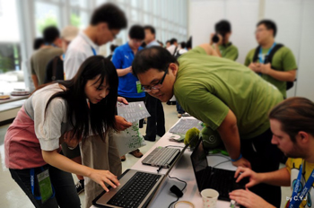

關於活動
 傳統商業軟體的開發者 (coders) 和使用者 (users) 很少交流，是大家都接受的事實。
傳統商業軟體的開發者 (coders) 和使用者 (users) 很少交流，是大家都接受的事實。
你的軟體用起來有問題？請打技術支援電話，由客服人員為你服務，他或許已經盡其所能，但未必能解決你的問題。如果問題是軟體的臭蟲，你只好痴痴地等待不知幾年後才開賣的下一版。而你當初之所以選用Ａ軟體而不是Ｂ軟體，常常是聽信銷售員 (sales) 的一面之詞或同儕的推薦。在這個行為模式下，users 面對的是銷售員和客服，coders 面對的還是銷售員和客服，users 遇到的問題要間接地才能反應到 coders 手上，中間還可能會被過濾掉。
Open source 這個在 1998 年出現的名詞，大家早已耳熟能詳。這種在網路上已經進行二、三十年的軟體開發模式之所以能成功，有許多原因。其中一個極為關鍵的因素，就是 coder 與 user 的直接接觸。無屏障的交流形成了問題的快速回報和修補機制，而當這個機制被網路效應放大到極限時，Linus 定律就出現了：「臭蟲難逃眾人法眼」 (With enough eyeballs, all bugs are shallow) ，軟體品質因此顯著提昇。在 open source 的模式中，coders 和 users 中間的人不再是銷售員或客服，而是讓軟體更容易被 users 接受的推廣者 (promoters)，他們打包套件讓軟體更好裝、寫說明文件讓軟體更易學、辦推廣活動讓更多人接觸到好軟體、在網路上回答問題解決使用者的疑惑，而且不會把 coders 藏在背後產生資訊的不對稱。
Coders、users 和 promoters 是讓 open source 軟體發光發熱的三大支柱，這個研討會就是專為這三種人舉辦的：你可以是 A 軟體的 coder、B 軟體的 promoter、C 軟體的 user，不論你是已經踏入 open source 領域，還是一直站在門口不知如何入門，歡迎你來參加 COSCUP — Conference for Open Source Coders, Users and Promoters!
COSCUP 研討會已堂堂邁入第九年，八年來不但由各地社群共同舉辦，在眾多同好的參與之下，逐漸成長茁壯。無論你是寫 open source 軟體的開發者、熱衷 open source 軟體的推廣者、熟悉 open source 軟體的使用者或是想了解 open source 軟體的新手，都歡迎你來參加一年一度全台最大的開源人年會。
2014 籌備團隊
總召
BobChao（Mozilla Community）
議程
組長： cclien
- AL - 小卓
- Danny
- Jenny (jsliang)
- Mosky
- Richard 強哥
- 大眼
- 義鴻
銷售
組長： 蝦蝦shiashia
- Ernest (dwchiang)
- Paddy
- 糖果荔枝
行銷
組長： Muka
- #Chiakai
- pingooo
- RSChiang
- Singing
- Violet 阿紫
- 凍仁翔
- 雁子
公關
組長： 仁豪
場務
組長： MouseMs
- Aleck陳經理
- Angelboy
- CCKai
- Clarence
- Eason
- Egret
- Ei-ling 艾岭
- Elvis
- Emma
- Fish福
- FrankWu
- frankye
- Henry Lee
- Kevin
- Kevin-WY
- Kiki
- lin4h
- Lulu
- Marsen
- NaNi
- Rifur
- RJ
- sanyuan
- SONY
- Stanley
- swem 蕭辰翰
- Teresa
- Trista
- Vagabond
- Vincent
- Wei
- wenhao
- ws育慈
- Yexina
- φ (Phi)
- 下午
- 亞亞
- 伊賀
- 匡政
- 姿姿
- 小Q
- 小元
- 小六
- 小宇
- 小方
- 小馬
- 崑元
- 平原不是丘陵
- 幻幽
- 影子
- 政哲
- 敬育
- Yuna
- 欣哥
- 洋蔥
- 白白的莫風
- 立揚
- 糖萱
- 紗子
- 花花
- 阿膽
- 高個
- 魏言
- 魚魚
- 麵包
線路
組長： David Huang
- Conan
- cyrandy
- DennyHuang
- Ei-ling 艾岭
- HenryYang
- itsneo
- Ming
- Nalant
- Peter
- Sars
- sntc06
- Starlition
- xxx
- 凌羽
- 小六
- 小明
- 小翊
- 左邊
- 手慢君
- 波卡Poka
- 浚原
- 皇甫
- 竹本立里
- 胖胖
- 腹黒い茶
- 阿嘉
記錄
組長： 丞相
- adaam
- Aminzai
- Arvin
- Can
- CJOKER
- Daniel丹丹
- Iven
- Mike
- Stanley
- w
- Zac
- 傑諾特
- 勞倫斯
- 小聖
- 小豪
- 日京三子
- 星雨
- 歐三
- 西歪街
- 黃牙牙
會計
組長： Tim Chen
- Toby Liu
- Singing
出納
組長： Lloyd Huang
行政
組長： 小畢 (CrBoy)
- choupi
- Idril*阿南
- Jie
- nfsnfs
- Orange
- Rainny
- Yiling Chen
- 一枝
- 奇猴
- 小草
- 豬豬
- 闇鴉/Lora
網站
- Evelyn Hung
- Kanru